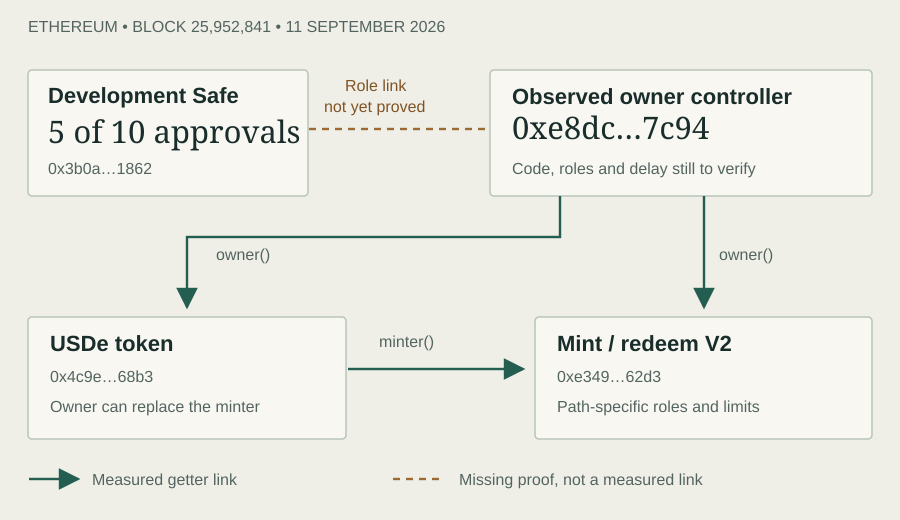

USDe / understand the claim
Follow the dollar.
Then follow the exit.
A dollar-like token is only the start. Understand what you own, who can change its rules, and what has to happen before you receive the asset you need.
LATEST RESEARCH · 12 SEPTEMBER 2026
Who can change USDe’s rules?
Fixed token code does not mean fixed issuance rules.
The new investigation follows the token owner, minting limits and emergency stops. A dated snapshot resolves several settings, but leaves an important control link open. It is not a verdict on the whole system.

Observation: Ethereum block 25,952,841, 11 September 2026. The Safe returned 5 required signatures and 10 owners; mint/redeem global ceilings were 200m/10m USDe per block; staking cooldown was 24 hours. Each number has a different scope. What those numbers do—and do not—mean.
Start with the position you hold
USDe in your wallet
Sending a token, selling it and redeeming with the issuer are different actions. Follow the direct route →
Staked USDe
sUSDe adds share accounting, permissions and an unstaking step. Receiving USDe is not yet receiving cash. Follow the staking route →
A token built on top, or a borrowed position
Maturity tokens, senior claims and loans add conditions to the underlying exposure. Unpack the extra layers →
What improved—and what remains open
Core source-provider bundles now have compiler, source-digest and runtime cross-checks. Selected controls have a common observation block. The owner-controller path, complete role history, current backing and executable market exits remain separate unfinished checks. How the evidence is classified.
Browse both dated reports. Earlier research stays readable when the current picture changes.